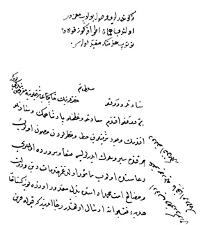

Belge 10: TKSA E.2457/29, veziriâzam (?) ‘arzı
Belge 10
“Sa’âdetlü ve devletlü Sultanım hazretlerinin hâkipây-i şerîflerine ma’rûz-i bendegî budur ki:
Benim devletlü efendim, sa’âdetlü ve ‘azametlü pâdişahımın ve sa’âdetlü efendimin vücûd-i şerîflerin hatâ ve hatarlardan masûn olub her kande seyr ü sûlûk iderler ise safâ ve sürûrda olmaları du’âsında olub me’mûr olduğumuz hidemât-i dîn ü devlet ve mesâlih-i ümmet-i Muhammed edâsında bezl-i makdûr üzereyüz, küstâhâne hediye-i fakîrâne irsâl olunmuşdur, ricâ ideriz ki kabûle karîn olub kusûr ve küsürümüz ‘af buyrula.
Bâkî emrü fermân devletlü efendimindir.”
H. H. Kösem Sultan’ın emri:
“Ne gönderildi vusûl bulub ma(n)zûrumuz olundu, hemân etrâfa göz-kulak tutub hidmetine mukayyed olasın.”
Yorum:
‘Arz iki kişiye, “pâdişaha ve sa’âdetlü efendi”ye hitap eder. İkincisi herhalde Kösem Sultan’dır. Kösem Osmanlıcayı iyi bilmez. “Manzûrumuz” kelimesini kendi söyleşisine göre “ma’zurumuz” şeklinde yazmıştır. Belgenin önemi, “hediye” sunulduğunu gösteren bir belge olmasındadır. Çağdaş kaynaklar pâdişaha “rüşvet” verildiğini yazarlar. Belgenin tarihini tespite yarar bir gösterge yoktur.